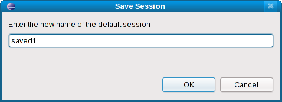

| OProfile View | ||
|---|---|---|
|
|
|
|
| Profiling Configuration | Remote OProfile | |
The OProfile view is the central point of interaction of the plug-in with the results of profiling.

The tree structure displayed above describes one or more profiles of one or more events in the following manner:
CPU_CLK_UNHALTED)
run1)
/notnfs/ksebasti/oprofile/plugin/factorial/Debug/factorial)
factorial2)
If source code is not available, some symbols (including source file name) may be shown, but no samples. This is normally the case with programs that use shared libraries. Also, depending on the Global Settings, a profile may have no dependent images.
Note that after Eclipse is restarted, there will be no data shown in the OProfile view. Data from past profiles will still be on the system, if not touched otherwise, and can be re-read with the Refresh View menu action (refer to the View Menu section for more details).
This section describes the features of the plug-in exposed through the view.
Double-clicking on a
 sample will open the source file in an editor and place the insertion point at the corresponding line in code.
sample will open the source file in an editor and place the insertion point at the corresponding line in code.
Note: For this to work, the source code must be available and it must be in the correct directory (as described in the debug info of the binary).

/var/lib/oprofile/samples/oprofiled.log
current, is overwritten on each launch of a profile if it is not saved. If you wish to keep a profile for later viewing, this menu action will allow you to save the session to a different name.

|
|

|
|
| Profiling Configuration | Remote OProfile |